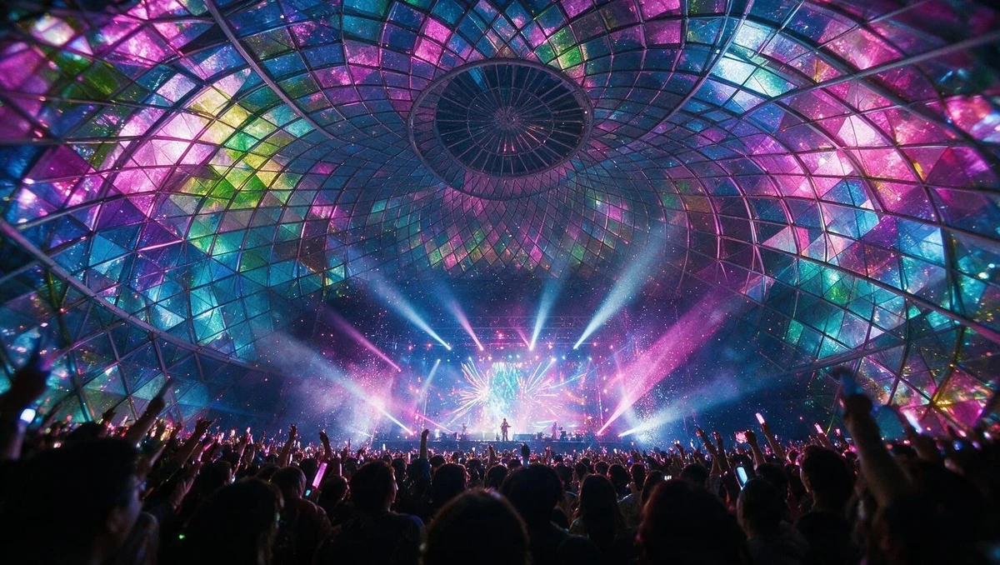
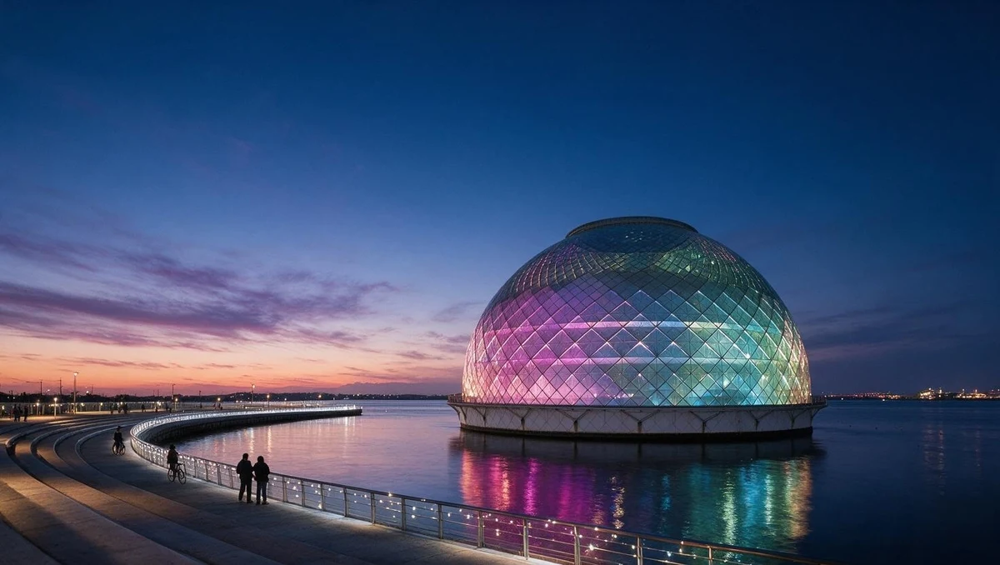
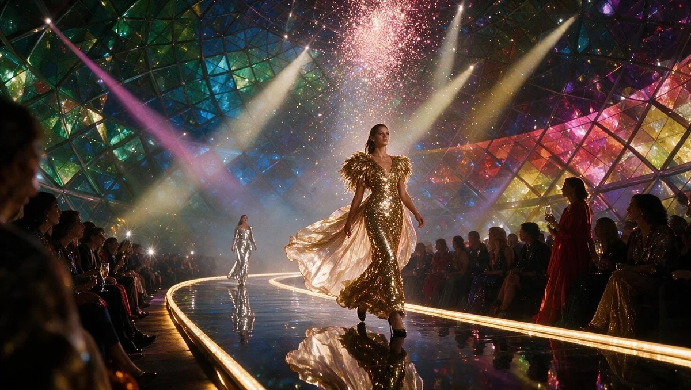

THE JEWELRY / DESIGN COLLECTION
One place.
Three perspectives.
大阪湾のイベント施設を、3つの異なる表情で。現在のCINEMA案と、新しい2案を実際に開いて比較できます。

CINEMA心が動く、その瞬間へ。
ブラック × シャンパンゴールド。
写真の断片が組み上がる、没入感のある演出。

The bay.The occasion.
余白に、品格を。
アイボリー × ディープグリーン。
写真と文字がゆっくり重なる、静かで優雅な演出。

Make itunforgettable.
華やかさと、余韻を。
プラム × ローズ。
写真が大きくスライドし、文字が現れるダイナミックな演出。
新しい2案はTOPページのデザイン比較用です。会場案内・お問い合わせ等のリンクは、共通の既存ページへ移動します。画像にはご支給のイベントイメージを含みます。